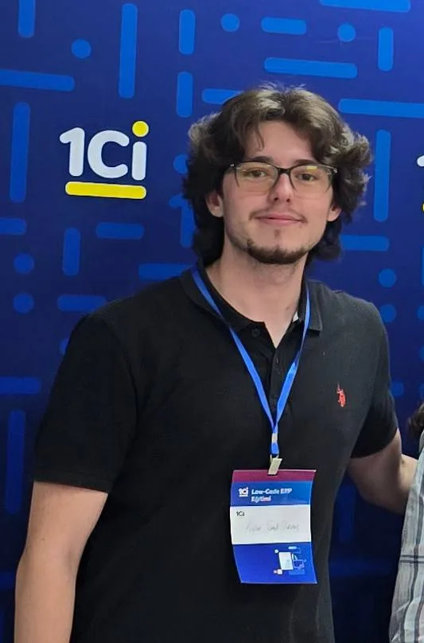

Анализ данных и проектирование pipeline
Я строю системы, которые превращают фрагментированные источники в decision-support workflow. Пример pipeline
Исследование финансов на основе данных, автоматизация и многоязычные цифровые продукты.
Я строю связанное портфолио на стыке финтех-исследований, анализа данных, Python-автоматизации и многоязычного продуктового дизайна. Вместо одного длинного CV каждая поисковая задача теперь получает собственный релевантный URL.

Сайт построен как набор тематических кластеров: база, навыки, слой сертификатов, hub-страницы проектов и отдельные кейсы, которые распределяют авторитет, а не конкурируют друг с другом.
Я строю системы, которые превращают фрагментированные источники в decision-support workflow. Пример pipeline
Я соединяю рыночное чтение, технический анализ и сравнительное финансовое исследование с продуктовой логикой. Пример исследования
Я переношу повторяющиеся задачи в низкотрение chat и utility workflow. Пример бота
Я выравниваю язык, информационную архитектуру и SEO внутри одной продуктовой системы. Пример продукта
Это самые сильные проектные страницы для поискового открытия вокруг прикладных data pipeline, многоязычных продуктов, финансовых исследований и Telegram-автоматизации.
Сквозной аналитический pipeline для сбора, очистки и визуализации данных внешней торговли.
Повторяемый аналитический процесс, который превращает сырые данные в отчёты для поддержки решений.
Многоязычный цифровой финансовый словарь и обучающий продукт на турецком, английском и русском языках.
Продуктовая платформа знаний, связывающая 1000+ финансовых терминов с управляемым обучающим потоком.
Telegram-решение с фокусом на автоматизацию, объединяющее несколько ежедневных utility-сценариев в одном боте.
Собран на Python и Telegram Bot API, чтобы объединить погоду, PDF-конвертацию, игры, заметки и вспомогательные tool-flows.
Исследовательский финансовый проект, сравнивающий компании схожих секторов на BIST и MOEX.
Исследовательская база, объединяющая макроэкономические эффекты и корпоративные метрики в одной аналитической рамке.
Проекты поддерживаются академическим контекстом, кластерами навыков и внешними сигналами, чтобы каждая важная тема имела понятный маршрут доверия.
База MIS и экономики связывает full-scholarship англоязычную программу, double major, GPA 3.26/3.88 и роль представителя курса с data- и business-логикой.
Сертификаты, участие в событиях, записи обучения ISMEK/1Ci/TODER и публичные сигналы профиля создают внешний контекст для портфолио.
Навыки, проекты и страницы кейсов теперь усиливают друг друга через намеренную внутреннюю перелинковку, а не повторяют одни и те же блоки.
Используйте hub проектов, страницы кейсов и кластеры навыков вместе, а затем переходите к контактам, если хотите обсудить продукт, сотрудничество или исследовательское направление.